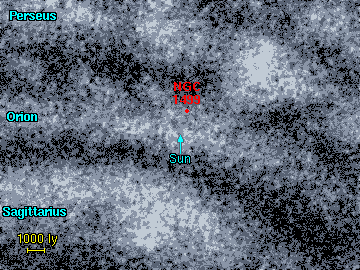

اكتشف من قبل العالم Edward Barnard عام 1885، و هو من السدم الكبيرة و القريبة نسبيافي ذراع الجبار المجري. يتوهج السديم بسبب الأشعة الكونية الآتية من نجم مجاور شديد الحرارة من الصنف O و هو Xi Persei و هو النجم اللامع في الصورة.
يتواجد في هذه المنطقة سديم وحيد لامع و هو سديم كاليفورنيا نفسه. و يمتد في الفضاء على مسافة 100 سنة ضوئية.
1 2 3 4 5 6 7 8
Catalogue Equatorial Galactic Size Type Distance Size Other Names
Number Coordinates Coordinates (arcmins) (ly) (ly)
RA (2000) Dec l° b°
--------------------------------------------------------------------------------------
NGC 1499 04 03.2 +36 22 160.6 -12.1 240' E 1500 105 California Nebula
|
Column 1: The standard catalogue name for the nebula. Column 2: Right Ascension and Declination for epoch 2000. Column 3: Galactic Longitude (l) and Latitude (b). Column 4: Angular size of the nebula in arcminutes. Column 5: Nebula type: E = emission, R = reflection. Column 6: Approximate distance to the nebula. Column 7: Approximate size of the nebula in light years. Column 8: Alternative name of the nebula.
أدناه خريطة لسديم كاليفورنيا و الممتد إلى ما يقارب 4 درجات قوسية في السماء. و يتواجد في هذه المنطقة عدة سدم عاتمة، و يحتمل بأن يكون سديم كاليفورنيا الجزء اللامع من غيمة عاتمة و هائلة.
|  | المسافة إلى سديم كاليفورنيا غير معروفة بدقة، لكن من المؤكد أنه موجود في ذراع الجبار المجري. من المرجح وفق تقديرات عديدة بأنه يقع على بعد 1500 سنة ضوئية. المسافة المقدرة لنجم Xi Persei وفق مصنف هيباركوس يضع النجم على بعد 1800 سنة ضوئيةلذلك قد يتراوح بعد السديم ±500 سنة ضوئية. زيادة أو نقصانا. |